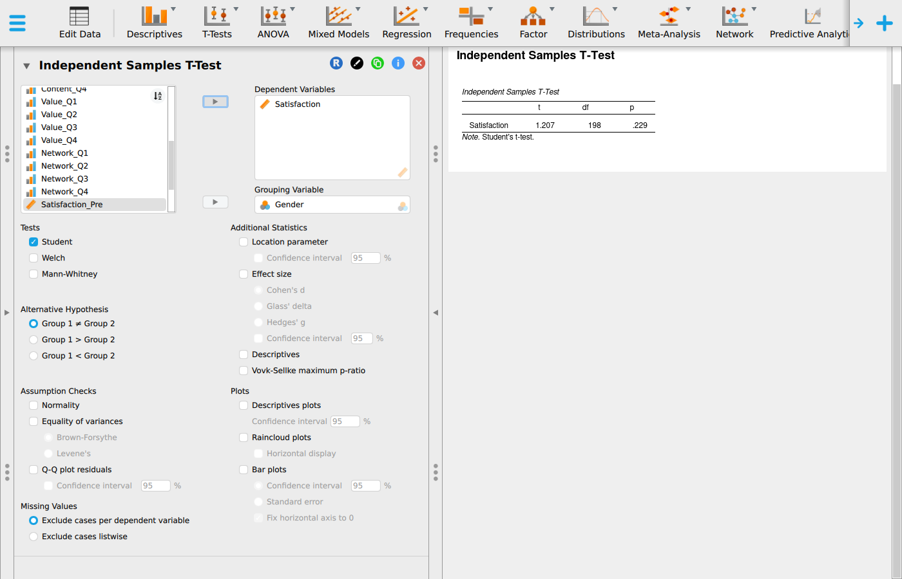
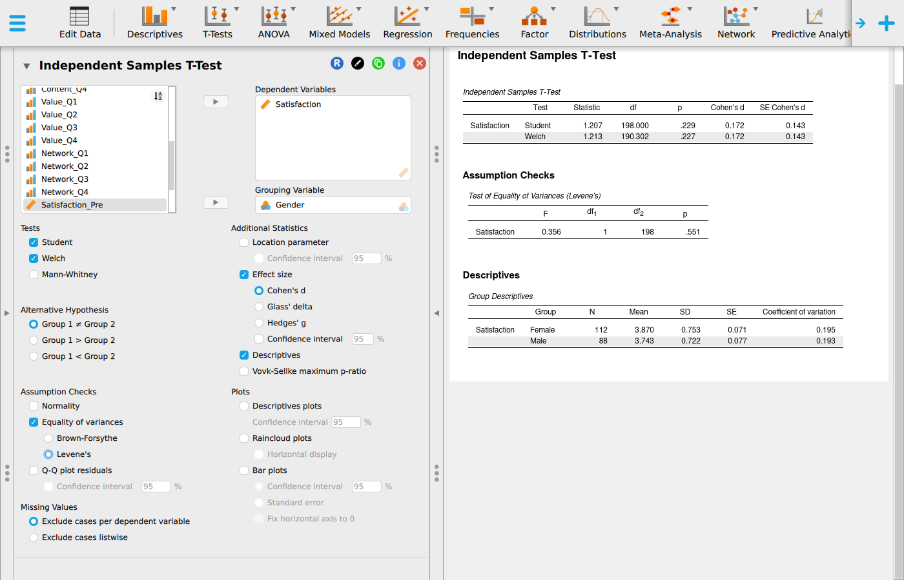
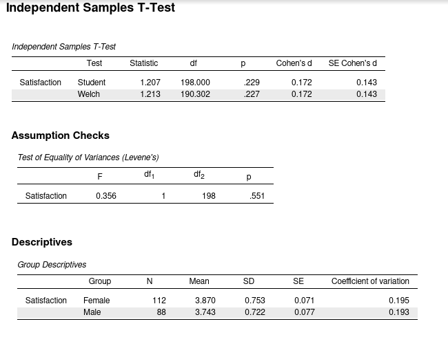
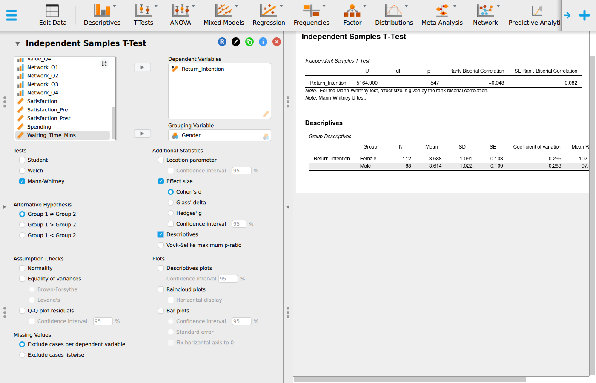
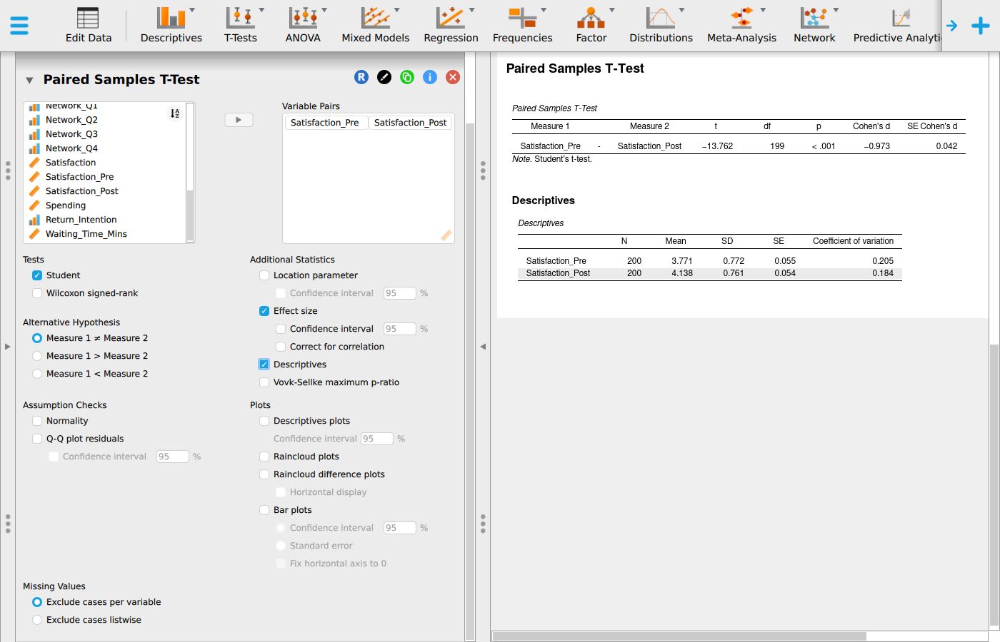

Comparing two groups and paired data
independent samples t-test, Levene’s test, Welch’s t-test, Cohen’s d, Mann-Whitney U test, paired samples t-test, rank-biserial correlation
Chapter 5: Comparing Groups
The service manager returns with two new questions. Do female and male customers rate the event differently? And did customers rate the event higher after it than before?
In chapter 4 we tested one mean against a benchmark. In this chapter we compare two means: the means of two separate groups, and the means of one group measured twice. Each design has its own test, and choosing the right one is half of the work.
This chapter uses DMM_Teaching_Data_Full.csv, the same 200 customer records as chapters 1, 2 and 4. Every figure quoted in it comes from that file, apart from one worked example marked as hypothetical. The dataset overview describes each column.
This chapter’s lecture
Lecture Comparing groups and repeated measures
Discussion
1 Welcome and weekly goals
⏱ 10 min
Build on chapter 4 by moving from one sample to two-group and before-after questions.
Acquisition
2 Group comparison test choice
⏱ 30 min
When to use an independent t-test, a Mann-Whitney U test, a paired t-test or a one-way ANOVA, and what each result means in a management setting.
Practice
3 Worked example and discussion
⏱ 15 min
Work through a two-group and a three-group comparison, and explain whether each result is both statistically and practically meaningful.
Assessment
4 Exit check
⏱ 5 min
A short exit check on test selection for a two-sample scenario.
Learning objectives
After studying this chapter you should be able to:
- Choose between the independent samples t-test, the Mann-Whitney U test and the paired t-test from the design and the type of outcome.
- Calculate an independent samples t statistic from each group’s mean, standard deviation and size.
- Read Levene’s test and choose between Student’s and Welch’s t-test.
- Calculate and interpret Cohen’s d, and separate statistical significance from practical significance.
- Run the Mann-Whitney U test and the paired t-test in JASP and read their output.
- Report each test in APA style and in plain language for a manager.
This week’s learning plan is 9 hours: 1 hour of synchronous lecture, 2 hours of synchronous tutorial and 6 hours of asynchronous self-study. Put your self-study time into the worked examples, the Try It exercises and the checkpoint quiz first.
This chapter builds on chapter 4, which sets out the standard error, the hypotheses, the p-value, the significance level and the two errors. Read that chapter first.
You are permitted to use Google NotebookLM to brainstorm the concepts. Complete the worked examples and the Try It exercises yourself, with no AI assistance. The full policy, and the reason NotebookLM is the only tool permitted, is on the Using AI on This Module page.
This chapter works in JASP. Keep a calculator beside you. One-way ANOVA, for three or more groups, is self-study material and follows in a later update of this chapter.
In chapter 4 we compared one mean with a fixed benchmark. In this chapter we compare two sets of scores, and the first step is to ask how they were collected.
Which test? Start with the design
For example: female and male customers are different people, so a comparison of their satisfaction involves two independent groups. A customer’s satisfaction before the event and the same customer’s satisfaction after it are the same person measured twice, so those scores form matched pairs.
The design and the type of outcome together decide the test:
| Design | Scale outcome | Ordinal outcome, such as a 1 to 5 rating |
|---|---|---|
| Two independent groups | Independent samples t-test | Mann-Whitney U test |
| The same cases measured twice | Paired samples t-test | Wilcoxon signed-rank test, paired |
The t-tests compare means. The Mann-Whitney and Wilcoxon tests compare ranks, so they suit ordinal ratings and scale variables that are clearly skewed in a small sample.
The independent samples t-test
Our first question compares the satisfaction of two groups. The file records Gender and Satisfaction, a score from 1 to 5:
| Gender | Customers, \(n\) | Mean satisfaction, \(\bar{x}\) | Standard deviation, \(s\) |
|---|---|---|---|
| Female | 112 | 3.870 | 0.753 |
| Male | 88 | 3.743 | 0.722 |
Female customers rate the event \(3.870 - 3.743 = 0.127\) points higher on average. In chapter 4 we saw that samples of the same customers differ by chance (sampling variation). The question is whether a gap of 0.127 points is larger than that kind of variation.
As in chapter 4, we write the question as two hypotheses about the population:
\[H_0: \mu_{\text{female}} = \mu_{\text{male}} \qquad H_1: \mu_{\text{female}} \neq \mu_{\text{male}}\]
where \(\mu_{\text{female}}\) and \(\mu_{\text{male}}\) are the mean satisfaction of all female and all male customers.
The t statistic for two groups
In chapter 4 we divided the gap between a mean and a benchmark by its standard error (the t statistic). For two groups we divide the gap between the two means by the standard error of that gap:
\[t = \frac{\bar{x}_1 - \bar{x}_2}{SE_{\text{diff}}}, \qquad SE_{\text{diff}} = s_p \sqrt{\frac{1}{n_1} + \frac{1}{n_2}}\]
where \(\bar{x}_1\) and \(\bar{x}_2\) are the two sample means, \(n_1\) and \(n_2\) are the two group sizes, and \(s_p\) is the pooled standard deviation, which combines the two groups’ standard deviations into one:
\[s_p = \sqrt{\frac{(n_1 - 1)s_1^2 + (n_2 - 1)s_2^2}{n_1 + n_2 - 2}}\]
where \(s_1\) and \(s_2\) are the two standard deviations. The denominator, \(n_1 + n_2 - 2\), gives the degrees of freedom: for our groups, \(df = 112 + 88 - 2 = 198\).
Worked example 5.1
Satisfaction and gender
Use Table 5.2: 112 female customers with a mean satisfaction of 3.870 and a standard deviation of 0.753, and 88 male customers with a mean of 3.743 and a standard deviation of 0.722.
Calculate the pooled standard deviation, the standard error of the difference and the t statistic, taking the female group as group 1. Then decide at \(\alpha = .05\).
Step 1, the pooled standard deviation:
\[s_p = \sqrt{\frac{111 \times 0.753^2 + 87 \times 0.722^2}{198}} = \sqrt{\frac{62.94 + 45.35}{198}} = \sqrt{0.547} = 0.740\]
Step 2, the standard error of the difference:
\[SE_{\text{diff}} = 0.740 \times \sqrt{\frac{1}{112} + \frac{1}{88}} = 0.740 \times 0.1425 = 0.1054\]
Step 3, the t statistic:
\[t = \frac{3.870 - 3.743}{0.1054} = \frac{0.127}{0.1054} = 1.21\]
Step 4, the decision: with \(df = 198\) the critical value is \(\pm 1.97\), and 1.21 lies inside it. JASP reports \(t(198) = 1.207\), \(p = .229\). Since \(p\) is above .05, we retain the null hypothesis: the data give no evidence of a difference in satisfaction between female and male customers.
The 112 female customers waited a mean of 45.277 minutes, with a standard deviation of 12.461. The 88 male customers waited a mean of 45.682 minutes, with a standard deviation of 11.226.
- Calculate the pooled standard deviation, to two decimal places.
- Calculate the standard error of the difference and the t statistic, taking the female group as group 1.
- Decide at \(\alpha = .05\), using the critical value of \(\pm 1.97\).
- \(s_p = \sqrt{(111 \times 12.461^2 + 87 \times 11.226^2) \div 198} = \sqrt{(17{,}234.42 + 10{,}963.09) \div 198} = \sqrt{142.41} = 11.93\) minutes.
- \(SE_{\text{diff}} = 11.93 \times 0.1425 = 1.70\), and \(t = (45.277 - 45.682) \div 1.70 = -0.405 \div 1.70 = -0.24\).
- \(-0.24\) lies well inside \(\pm 1.97\), so we retain the null hypothesis. Female and male customers wait about the same length of time. JASP gives \(t(198) = -0.238\), \(p = .812\).
Running the test in JASP
Open DMM_Teaching_Data_Full.csv and follow these steps:
- Choose T-Tests → Classical → Independent Samples T-Test.
- Move
Satisfactioninto Dependent Variables andGenderinto Grouping Variable.

- Under Tests, tick Student and Welch.
- Under Additional Statistics, tick Effect size, with Cohen’s d, and Descriptives.
- Under Assumption Checks, tick Equality of variances and select Levene’s.

JASP prints three tables: the t-test with a Student row and a Welch row, Levene’s test, and the group descriptives.

With Display exact p-values ticked, JASP prints p-values in scientific notation. To show three decimals, open the menu (☰), choose Preferences → Results and untick Display exact p-values. Keep Fix the number of decimals at 3.
Levene’s test and Welch’s t-test
The independent samples t-test gives a dependable p-value when three conditions hold:
- Independence: each case belongs to one group only. This comes from the study design.
- Normality, or large groups: the outcome is roughly normal in each group, or each group holds about 30 cases or more.
- Equal variances: the two groups have similar spread.
Levene’s test checks the third condition. Its null hypothesis is that the two population variances are equal, and its p-value decides which row of the output to report:
| Levene’s p | Variances | Report |
|---|---|---|
| Above .05 | Treated as equal | Student’s t-test, the equal-variances row |
| .05 or below | Unequal | Welch’s t-test, the unequal-variances row |
For satisfaction by gender, Levene’s test gives \(F(1, 198) = 0.36\), \(p = .551\), so we report Student’s t-test, as in worked example 5.1.
Welch’s t-test keeps each group’s variance separate. Its standard error is \(\sqrt{s_1^2 / n_1 + s_2^2 / n_2}\), and its degrees of freedom come from a longer formula that JASP calculates for us. They are usually a decimal number, which is a quick check that we are reading the Welch row.
Worked example 5.2
Delivery times at two branches (hypothetical)
This example uses hypothetical summary figures, since no comparison in the teaching file has unequal variances. Branch A made 40 deliveries with a mean of 32.5 minutes and a standard deviation of 4.1. Branch B made 25 deliveries with a mean of 35.8 minutes and a standard deviation of 9.6. Levene’s test gives \(p = .003\).
Choose the row to report, calculate the Welch t statistic, and decide at \(\alpha = .05\). Welch’s degrees of freedom are 29.55.
Choice of row: Levene’s \(p = .003\) is .05 or below, so we report Welch’s t-test.
The Welch standard error:
\[SE_{\text{Welch}} = \sqrt{\frac{4.1^2}{40} + \frac{9.6^2}{25}} = \sqrt{0.420 + 3.686} = \sqrt{4.107} = 2.027\]
The t statistic: \(t = (32.5 - 35.8) \div 2.027 = -1.63\).
Decision: with 29.55 degrees of freedom, \(p = .114\), above .05, so we retain the null hypothesis. Reading the Student row by mistake would give \(t(63) = -1.92\), \(p = .060\): the rows differ. Levene’s test therefore comes first.
Effect size: Cohen’s d
A p-value tells us whether a gap is larger than sampling variation usually produces. To learn how large the gap is, we need an effect size.
For example: female customers rate the event 0.127 points higher. The pooled standard deviation is 0.740 points (worked example 5.1), so the gap is \(0.127 \div 0.740 = 0.17\) of a standard deviation.
This measure is Cohen’s d: the difference between two means, measured in pooled standard deviations:
\[d = \frac{\bar{x}_1 - \bar{x}_2}{s_p}\]
where the symbols are as in worked example 5.1. Cohen (1988) suggested these benchmarks:
| Size of \(d\), ignoring the sign | Description |
|---|---|
| 0.2 | Small |
| 0.5 | Medium |
| 0.8 | Large |
Our satisfaction effect, \(d = 0.17\), is smaller than small. Statistical significance means a difference is larger than sampling variation usually produces. Practical significance means a difference is large enough to change a decision. A report gives both the p-value and Cohen’s d.
Reporting an independent samples t-test
In chapter 2 we reported each result twice, once in APA style and once for a manager (two ways to report a result). A t-test is reported the same way.
In APA style: An independent samples t-test was conducted to compare satisfaction between female and male customers. Levene’s test indicated equal variances, \(F(1, 198) = 0.36\), \(p = .551\). Female customers (\(M = 3.87\), \(SD = 0.75\)) did not differ significantly from male customers (\(M = 3.74\), \(SD = 0.72\)), \(t(198) = 1.21\), \(p = .229\), \(d = 0.17\).
For the manager: Female and male customers are equally satisfied, so one service approach serves both.
Three APA rules apply to every t-test:
- The degrees of freedom go in brackets after \(t\): \(t(198)\). Welch’s go to two decimals, \(t(29.55)\).
- The p-value has no zero before the point: \(p = .229\), or \(p < .001\).
- Cohen’s d keeps its zero: \(d = 0.17\), because d can exceed 1.
Use your answer to Try It 5.1. JASP gives \(p = .812\), \(d = -0.03\), and Levene’s \(p = .347\). Write the result in one APA-style sentence and one sentence for the manager.
Levene’s \(p = .347\) is above .05, so the Student row applies. Female customers (\(M = 45.28\), \(SD = 12.46\)) and male customers (\(M = 45.68\), \(SD = 11.23\)) did not differ significantly in waiting time, \(t(198) = -0.24\), \(p = .812\), \(d = -0.03\). For the manager: both groups wait about 45 minutes, so queue changes affect them alike.
The Mann-Whitney U test
Some outcomes are ordered ratings. Return_Intention records each customer’s intention to return on a 1 to 5 scale, and the gap between a 3 and a 4 need not equal the gap between a 4 and a 5. For such outcomes we compare ranks: all 200 ratings are put in order, and we ask whether one group tends to sit higher in that order than the other. This is the Mann-Whitney U test, the rank-based test for two independent groups.
To run it in JASP, use the same Independent Samples T-Test panel: move Return_Intention into Dependent Variables and Gender into Grouping Variable, untick Student, tick Mann-Whitney, and tick Effect size and Descriptives.

JASP reports \(U = 5164\) and \(p = .547\), so we retain the null hypothesis. Its effect size is the rank-biserial correlation, \(r = -.05\), which runs from \(-1\) to \(1\). About .10 is small, .30 medium and .50 large, so this effect is close to zero. Both groups have a median rating of 4.
In APA style: A Mann-Whitney U test found no significant difference in return intention between female customers (\(Mdn = 4\)) and male customers (\(Mdn = 4\)), \(U = 5164\), \(p = .547\), rank-biserial \(r = -.05\).
Run a Mann-Whitney U test of Content_Q1, a 1 to 5 rating, by Gender. Report U, p and the two medians, and state your decision.
\(U = 5563\), \(p = .100\), and both medians are 4. Since \(p\) is above .05, we retain the null hypothesis: the data give no evidence that female and male customers rate the content differently.
The paired samples t-test
Each customer rated satisfaction twice: before the event, in Satisfaction_Pre, and after it, in Satisfaction_Post. The two columns belong to the same people, so we work with each customer’s change: their score after the event minus their score before it.
For example: across the 200 customers, the mean change is \(+0.366\) points, with a standard deviation of 0.376. The paired t-test is a one-sample t-test of these changes against 0, so everything from chapter 4 applies:
\[t = \frac{\bar{d}}{s_d / \sqrt{n}}\]
where \(\bar{d}\) is the mean change, \(s_d\) is the standard deviation of the changes and \(n\) is the number of pairs. Each customer’s own starting level drops out of the changes, so a paired design detects smaller effects than two separate groups.
Worked example 5.3
Satisfaction before and after the event
The mean change in satisfaction is 0.366 points, the standard deviation of the changes is 0.376 and there are 200 pairs. Calculate the t statistic and the degrees of freedom, and decide at \(\alpha = .05\).
The standard error: \(s_d / \sqrt{n} = 0.376 \div 14.142 = 0.0266\).
The t statistic: \(t = 0.366 \div 0.0266 = 13.76\), with \(df = 200 - 1 = 199\).
Decision: 13.76 lies far beyond the critical value of 1.97, and JASP reports \(p < .001\), so we reject the null hypothesis. Satisfaction rose from before the event to after it. The effect size, the mean change divided by its standard deviation, is \(0.366 \div 0.376 = 0.97\), a large effect.
In JASP, choose T-Tests → Classical → Paired Samples T-Test, select Satisfaction_Pre and Satisfaction_Post together and move them into Variable Pairs, then tick Effect size and Descriptives.

JASP subtracts the second measure from the first, so it reports \(t = -13.76\) and \(d = -0.97\). The minus sign only shows that the scores after the event are higher. In a report we state the direction in words.
In APA style: A paired samples t-test showed that satisfaction rose from before the event (\(M = 3.77\), \(SD = 0.77\)) to after it (\(M = 4.14\), \(SD = 0.76\)), \(t(199) = -13.76\), \(p < .001\), \(d = -0.97\).
The same customers rated content (Content_Q1) and value (Value_Q1), both on a 1 to 5 scale.
- Which test fits, given that both ratings are ordinal?
- Run it in JASP: use the Paired Samples T-Test panel with Wilcoxon signed-rank ticked in place of Student. Report V and p.
- The paired Wilcoxon signed-rank test: the same customers gave both ratings, and both are ordinal.
- \(V = 7241\), \(p = .004\). Content is rated higher than value, with means of 3.96 and 3.67 and a median of 4 for both.
Section summary
The design decides the test. Two independent groups with a scale outcome call for the independent samples t-test, and with an ordinal outcome for the Mann-Whitney U test. The same cases measured twice call for the paired samples t-test. Levene’s test chooses the row of the independent t-test: above .05 we report Student’s t-test, and at .05 or below Welch’s, which has decimal degrees of freedom. Cohen’s d measures the gap in standard deviations, with 0.2, 0.5 and 0.8 as small, medium and large. In the teaching dataset, female and male customers did not differ significantly in satisfaction, \(t(198) = 1.21\), \(p = .229\), \(d = 0.17\), and satisfaction rose from before the event to after it, \(t(199) = -13.76\), \(p < .001\).